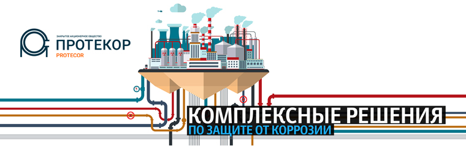
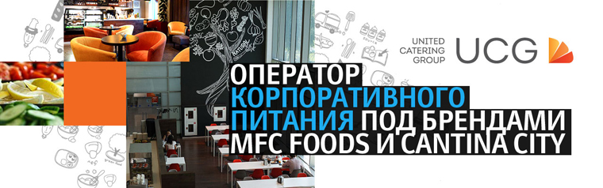

Сайт складского комплекса ЧТПЗ (Первоуральск)
Личный кабинет клиента
Личный кабинет для транспортных компаний
Корпоративный сайт бизнес-консультанта и поставщика услуг ЦОД Linxdatacenter
Результаты:
- Количество посетителей сайта за 6 месяцев выросло в 5 раз (с 863 до 4728).
- Количество заявок увеличилось вдвое.
- Заложенный сценарий по просмотру услуг выполняют 75% пользователей (ранее выполняли 25%).
- Интерактивная карта географии бизнеса с детальным описанием ЦОД.
- Анимированная инфографика статистики оказанных услуг и реализованных проектов по отраслям и географии.
- Детальная информация об услугах (размещение оборудования, облачные решения, дополнительные сервисы). Детальные страницы услуг (видео, анимация, описание услуг, список партнеров).
- Расширенная страница «О компании» (видео, цифры и факты о компании, миссия и ценности, сертификаты и награды, интерактивный блок с командой, история).
- Детальные описания дата-центров компании в Москве, Санкт-Петербурге и Варшаве с инфографикой.
- Подготовка графики (50+ уникальных иконок, анимированные баннеры, инфографика).
- Баннеры-перетяжки с микро-анимацией.
- Версии сайта на 3 языках (русский, английский, китайский).
- Расширенный инфоцентр (пресс-кит, мероприятия, новости, статьи) с подпиской на новости.
- История компании, оформленная в виде timeline.
- Сервисы обратной связи (7 уникальных веб-форм для различных сценариев обращения).
Группа сайтов Промсвязьбанка
upravlyaem.ru
Сайт управляющей компании Промсвязь
spbconf.ru
Сайт Санкт-Петербургской международной банковской конференции SIBC
psbinvest.ru
Сайт инвестиционных услуг Промсвязьбанка
Сайт Санкт-Петербургской международной банковской конференции SIBC
- Фоновая видео-панорама на главной странице.
- Фотогалерея (15+ альбомов, 1000+ фотографий).
- Архивация сайтов прошедших мероприятий.
- Зеркальная версия сайта на английском языке.
- Программа конференции, структурированная по дням.
Сайт инвестиционных услуг Промсвязьбанка
- Ежедневный аналитический обзор: валютные и денежные рынки, рынки акций, календарь дивидендов, обзор сектора и др.
- Расширенный раздел «FAQ» (описано 50+ типовых вопросов)
- Формы заявки на открытие брокерского счета, индивидуального инвестиционного счета и консультацию.
Сайт управляющей компании Промсвязь
- Меню, оформленное в виде динамической карусели.
- Калькулятор доходности ПИФов.
- Калькулятор накоплений.
- Тест «Какой вы инвестор?».
- Расширенный раздел «О компании», включающий в себя историю компании с 2002 года, миссию и ценности, список учредителей и партнеров и лицензии.
- Раздел «Раскрытие информации» с фильтрацией по фондам.
- Интерактивная карта пунктов продаж с геотаргетингом контактной информации.
Сайт оператора корпоративного питания MFC Foods
- Виртуальные туры по столовым.
- Каталог проектов с фотогалереей.
- Мобильная версия.
Сайт и фирменный стиль ЗАО «Протекор»
edu.protecor.ru
Сайт учебного центра ЗАО «Протекор»
tdprotecor.ru
Интернет-магазин строительного оборудования для защиты от коррозии

Корпоративный сайт
- Более 10 отрисованных иконок для каталога услуг.
- Библиотека технической документации. Статьи, публикации, буклеты, логотипы, брендбук и презентации компании для скачивания в «Пресс-центре».
- Адаптивный дизайн (отображение контента оптимизируется под разные устройства и разрешения экранов).
- Fullscreen-слайдер.
- Каталог проектов с фильтрами по видам работ (защита металлоконструкций, теплошумоизоляция, устройство бетонных полов, продажи оборудования) и стадии (сданы/в процессе реализации). Вывод проектов списком и на карте (интеграция с Google Карты).
- Детальная страница проекта с фотогалереей и отметкой на карте, отзывом заказчика и показателями объемов работ.
- Страница «О компании» с инфографикой показателей деятельности и динамическими элементами для УТП, выходом на страницы о корпоративных ценностях, списком услуг, ключевыми проектами, сертификатами и лицензиями.
Интернет-магазин строительного оборудования
- Каталог специального строительного оборудования. Интеграция с платформой Microsoft Dynamics NAV.
- Детальная страница товара с описанием, фото и характеристиками, комплектацией, документами для скачивания, видео, сертификатами, товарами-аналогами и формой «Задать вопрос». Товар можно добавить к заказу, сравнить с другими товарами в разделе, отложить. Вывод складского остатка по каждому товару с возможностью подписаться на уведомления о поступлении.
- «Умный фильтр» по 10+ параметрам, сортировка по цене, артикулу, названию, настройка пейджинга в списке товаров каждой категории.
- Понятный сценарий заказа с возможностью отложить товары и купить в 1 клик. Интеграция с платежной системой Яндекс.Касса для оплаты заказов.
- Личный кабинет пользователя с возможностью отслеживать исполнение заказов в реальном времени. Персональный менеджер для каждого зарегистрированного пользователя.
- Частичная адаптация интерфейса под планшеты.
Сайт учебного центра
- Разработка интерфейса в соответствии с требованиями Приказа Рособрнадзора от 29.05.2014 №785 «Об утверждении требований к структуре официального сайта образовательной организации»
- Список программ обучения. Детальная страница программы с описанием, количеством учебных часов и слушателей в группе, календарем плановых дат обучения, тематическим планом, расписанием занятий, учебным планом для скачивания, списком преподавателей, отзывами учащихся и формой записи на обучение.
- Учредительные документы, образцы документов об обучении, учебные планы и программы для скачивания.
- Библиотека нормативных документов для скачивания и ссылок на контролирующие организации и образовательные ресурсы.
- Версия для слабовидящих в соответствии с ГОСТ Р 52872–2007 «Интернет-ресурсы. Требования доступности для инвалидов по зрению» (два варианта контрастности и настройка размера шрифта).
Сайт компании-интегратора систем управления «АСАП Консалтинг»
- Мегаменю.
- Онлайн-запись на мероприятия компании.
- Форма «Заказать буклет» по решениям.
- Интерактивная схема методологии разработки и внедрения SAP-решений.
Корпоративный сайт United Catering Group

- Flat Design.
- Версия сайта на английском языке.
- Мобильная версия.
- Формы «Задать вопрос» и «Откликнуться на вакансию».
- Интеграция с YouTube каналом компании.
Корпоративный сайт негосударственного пенсионного фонда «Стройкомплекс»
- Каталог пенсионных программ для физических и юридических лиц с возможностью скачать и заполнить анкету на получение пенсии.
- Иллюстрированная инструкция, как стать клиентом фонда.
- Комплекты документов для скачивания (заявления, договоры, анкеты) по обязательному пенсионному страхованию и негосударственному пенсионному обеспечению.
- Раздел «Раскрытие информации фонда»: учредительные и отчетные документы с фильтром по годам.
- Сервис «Вопросы и ответы» с возможностью задать свой вопрос.
- Списки новостей и вакансий.
- Формы «Заказать обратный звонок» и «Связаться с нами».
- Поиск по сайту.
- Адаптивный дизайн (отображение контента оптимизируется под разные устройства и разрешения экранов).
Личный кабинет участника
- Список договоров по обязательному пенсионному страхованию и негосударственному пенсионному обеспечению.
- История взносов с интеграцией данных из системы Заказчика и формированием PDF.
- Автоматическая генерация заявки на изменение данных о физическом лице в HTML-формат.
Сайт булочно-кондитерского комбината «Коломенское» и фотосессия каждого продукта
- Каталог брендов «Шоколадница», «Коломенское», «Мое обожание», «Семейный», «Вечерняя тайна».
- Отдельные страницы для покупателей и поставщиков с формами заявок на сотрудничество.
- Видеоролики из телепередач, в которых упоминается продукция комбината «Коломенское».
- Форма «Задать вопрос директору».
- Форма записи на экскурсию по предприятию.
Корпоративный сайт группы компаний Vog Trade
- Каталог 2 500+ видов обоев и плитки ведущих мировых производителей, деление на каталоги брендов. Сортировка товаров по новизне, ценовой категории, способу производства и цвету.
- Фильтрация товаров в каталоге по 10+ параметрам: бренд, цвет, рисунок и т.д. Индивидуальные наборы свойств фильтра для каталога обоев и каталога плитки.
- Интеграция каталога с 1С в формате XML.
- Детальная страница вида обоев с фото паттерна, списком характеристик, подборкой схожих по дизайну обоев, вариантами оттенков и формой Стать партнером .
- Детальная страница вида плитки с фото плитки в интерьере, описанием, списком характеристик, списком других видов плитки из общей коллекции с фильтрацией по цвету, подборкой похожих коллекций и формой Стать партнером .
- Умный поиск с выделением результатов поиска по каталогу в отдельную вкладку.
- 3 категории новостей: события, новинки, акции. Подписка на обновления.
- 2 карты региональной сети компании, оформленные в фирменном стиле Vodtrade.
- Страница О компании с фактами о Vogtrade, видео-презентацией, описанием ключевых направлений деятельности и списком брендов.
- Страница Партнерам с результатами компании в числах, видео-презентацией преимуществ сотрудничества и описанием направлений партнерской деятельности.
- Контакты складов и офисов Vogtrade с фильтром по городам.
- Проведение выездной фото-сессии офиса, склада и шоу-рума компании.
- Разработка 2 промо-роликов, один из которых рассказывает о преимуществах работы с компанией, а второй наглядно демонстрирует процесс и все этапы работы компании с Заказчиком.
- Адаптивный дизайн (отображение контента оптимизируется под разные устройства и разрешения экранов).
Сайт компании «Байкал Электроникс»

- Компактный каталог процессоров с фильтром по сферам применения («Коммуникационная инфраструктура», «Офисные рабочие места», «Рабочие станции», «Сетевые накопители данных», «Безопасность», «Промышленная автоматизация и управление зданиями»).
- Детальная страница процессора с техническими характеристиками, преимуществами, сферами применения, блок-схемами, сервисом скачивания промофайлов (по одному или архивом) и формой заявки в службу продаж.
- Сервис сравнения продуктов по техническим характеристикам: количеству ядер, рабочей частоте, размеру кэша, интегрированным интерфейсам, энергопотреблению, размерам корпуса.
- Драйверы и промофайлы с поиском по названию файла, фильтрами по серии и модификации процессора.
- Вопросы и ответы по группам («Продукция», «Как приобрести»), форма «Задать вопрос».
- Специальные разделы для поставщиков, акционеров и инвесторов.
- Календарь выставок и конференций («Мероприятия»).
- Интерактивный баннер с видео о компании.
- Версии сайта на английском, корейском и китайском языках.
- Адаптивный дизайн для 4 разрешений (сайт перестраивается под разные устройства).
Сайт инвестиционной компании Volga Capital
- Адаптивный дизайн.
- Версия сайта на английском языке.
- Авторские панорамные фотографии.
- Динамическая выгрузка контента.
- Цветовая анимация фона.
Сайт на поддержке Individ с 2015 года.
Сайт группы компаний «КрайсНефть» (Иркутск)
Результаты:
- После открытия нового сайта процент отказов снизился вдвое: с 16% до 8%.
- Доля мобильных пользователей выросла на 25% и составляет половину трафика.
- 80% пользователей посещают раздел «О группе компаний», тем самым выполняя одну из основных задач Клиента, поставленных перед Individ.

- Каталог АЗС сети (50+) на карте и списком. Поиск АЗС по населенным пунктам, фильтрация по видам топлива, дополнительным услугам и платежным картам. GPS-координаты АЗС для навигаторов.
- Список проектов компании с индивидуальным оформлением детальных страниц.
- Страница «Тест-драйв топлива OZON» с описанием проекта, фотогалереей машин, комментариями участников, результатами техосмотров, видео круглого стола по итогам тест-драйва, мнениями экспертов, публикациями и видеосюжетами в СМИ и списком партнеров.
- Детальная страница участника тест-драйва с фотогалереей, видеомнениями участника и диагноста, таблицей результатов техосмотров.
- Правила и документы для оформления и использования дисконтной карты, подарочного сертификата и топливной карты и контакты сотрудников расчетного центра в разделе «Карты».
- Пресс-центр с мероприятиями, публикациями и пресс-релизами с фильтром по годам и подпиской.
- Инфографика и типографика для 5 ключевых разделов: состав, преимущества и принцип действия топлива OZON, результаты техосмотров по итогам тест-драйва, объемы хранения базы СУГ, контроль качества топлива и газа.
- Раздел «Вопросы и ответы»: форма «Задать вопрос», премодерация вопросов и оповещение пользователя о публикации ответа.
Портал Конгресс-бюро Москвы
- Каталог конгрессных и выставочных площадок.
- Календарь мероприятий с фильтром по отраслям и датам.
- Каталог знаковых мест Москвы.
- Meeting Planner’s Guide — подборщик площадок для мероприятия и ближайших к ним отелей.
- Форма заявки на организацию мероприятия.
- Калькулятор площади площадок в зависимости от количества гостей и способов рассадки.
- PDF-версия каталога площадок в FlippingBook Publisher.
- Подписка на рассылку новостей.
- Адаптивный дизайн (отображение контента оптимизируется под разные устройства и разрешения экранов).
- Версия сайта на английском языке.
Личный кабинет партнера.
- Привязка выставочных площадок, конгресс-отелей и услуг к странице партнера/организатора.
- Закрытый сервис Meeting Planner’s Guide — подборщик площадок для мероприятия и ближайших к ним отелей.
- Сервис «Запросы предложений» — информация об открытых тендерах на проведение мероприятий.
- Отдельные мероприятия для партнеров и организаторов. Возможность добавлять свои отчеты о проведенных мероприятиях.
Сайт компании «Мособлстройтрест №11»
- Список жилых комплексов с фильтром по стоимости и площади квартиры, этажам, количеству комнат.
- Детальная страница жилого комплекса: описание, расположение на карте, план микрорайона, условия ипотеки и список домов.
- Генерация интерактивной схемы расположения квартир по заданным параметрам: количество подъездов, этажей, квартир и комнат в них.
- Детальная страница планировки с планами этажей, секций и квартир в доме.
- Сервис подбора квартир с выбранной планировкой.
- Личный кабинет администратора с возможностью визуального редактирования сведений о квартирах без авторизации в бэкофисе.
- Портфолио построенных объектов с фильтром по районам, назначению и сроку сдачи.


 moscowcvb.ru
moscowcvb.ru